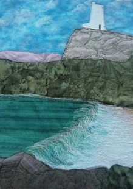

Michael Linford

Mae fy ngwaith yn cynnwys morluniau a thirluniau sy’n lleol i Fôn a Gogledd Cymru.
Dw i’n gweithio mewn dyfrlliwiau ac olewau.
My work includes seascapes and landscapes local to Anglesey and North Wales.
I work in watercolours and oils.
01248 490184
caimcot@btinternet.com
CAIM COTTAGE, PENMON, BEAUMARIS, LL58 8SW
O Biwmares ewch yn syth trwy Llangoed i ben yr allt. Trowch i’r chwith yna cymerwch y troad cyntaf i’r dde a dilyn yr arwyddion.
From Beaumaris head for Llangoed. Go straight through the village and up to the T junction at the top the hill. Turn left and after about 200 yards turn right and follow signs to Caim Cottage.